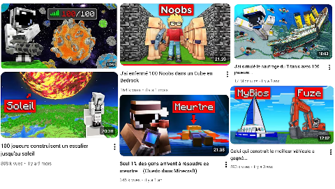
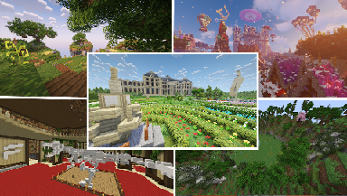
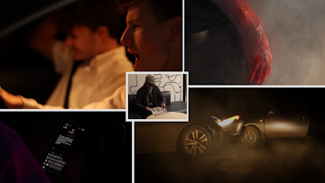
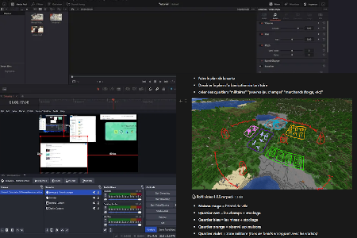
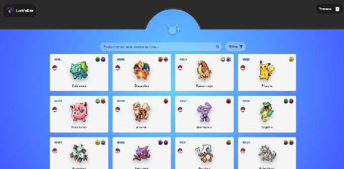
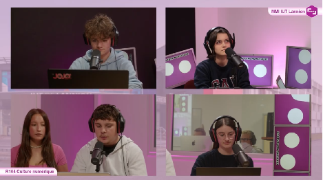
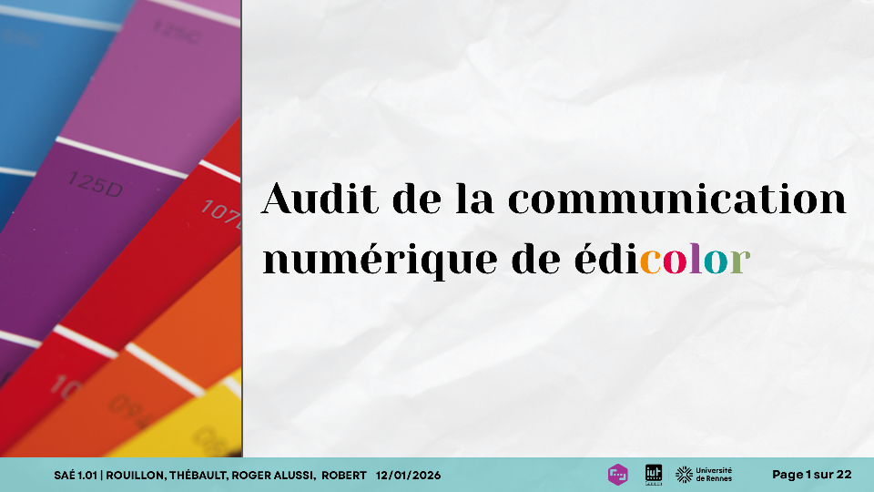
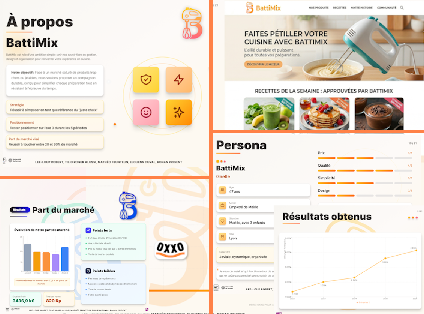
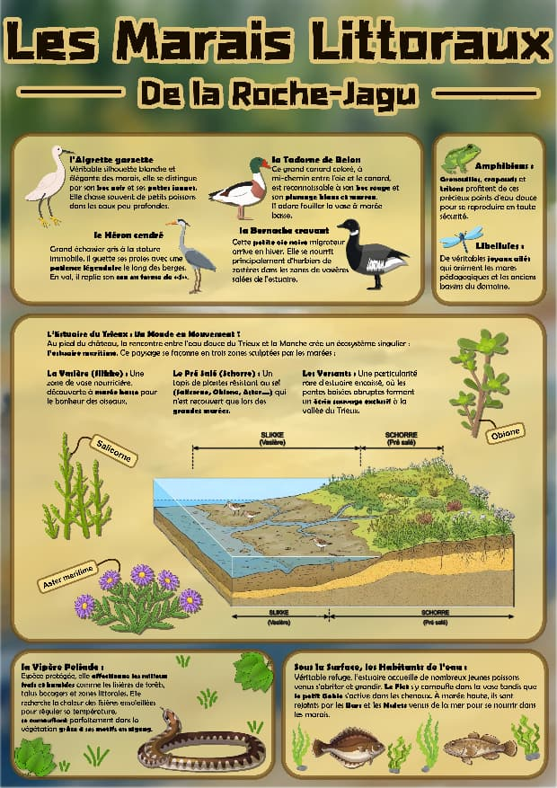
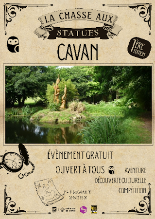

Gestion d'Évènement en Ligne
Plus de 100 Joueurs sur Minecraft
Organisation complète d'événements multijoueurs : level design des épreuves, coordination technique des équipes et support aux participants en direct.

Expérience Freelance
Level Design & Prestations sur Mesure
Création de décors 3D immersifs sur commande pour des vidéastes et serveurs, avec gestion complète de la relation client et de la facturation.
Doublage & Interprétation Vocale
Fictions Sonores et Personnages Animés
Participation à des projets de doublage amateur avec enregistrement en studio, mixage audio et synchronisation labiale sur Davinci.

Court-Métrage
Last Night
Production audiovisuelle complète — scénario, tournage et montage sur Davinci — pour un film de sensibilisation à la sécurité routière.

Montage & Stratégie Vidéo
Post-Production pour un Créateur de Contenu
Scripting, découpage technique et montage sur Davinci au sein de l'équipe d'un créateur majeur. Projet actuellement en cours.

Site web
Le Pokédex Responsive
Conception d'une application web 3 pages avec Bulma et Figma, de la phase de wireframing jusqu'à l'intégration front-end finale.

Création d'Affiche
A L'West Fest
Création d'une affiche fusionnant photographie et illustration numérique pour un rendu print grand format, pilier visuel de toute la campagne.

Émission Radio en Direct
L'Intelligence Artificielle face à l'Art
Animation d'une émission radio en direct avec débat contradictoire sur l'IA et l'art. J'y ai tenu le rôle de présentateur avec un chronométrage à la seconde près.

Audit & Diagnostic Digital
Repenser la Communication d'Édicolor
Analyse complète du site web — erreurs techniques, ergonomie, accessibilité — avec recommandations stratégiques et benchmarking concurrentiel.

Simulation d'Entreprise
Le Serious Game Stratégique
Pilotage d'une entreprise virtuelle en équipe de 5 face à un marché concurrentiel. Mon équipe s'est hissée en tête du classement des ventes.

Infographie Scientifique
La Biodiversité de la Roche-Jagu
Vulgarisation de données scientifiques sur les marais littoraux sous forme d'un support visuel pédagogique réalisé sur Affinity.

Audit de Communication
Le Festival MMI
Stratégie de communication globale d'un festival étudiant : identité visuelle, charte graphique, communiqués de presse et recherche de sponsors.

Stratégie Marketing
Promouvoir une Ville
Plan marketing territorial présenté en pitch final devant le Maire et les élus locaux pour attirer touristes et valoriser les atouts de la ville.